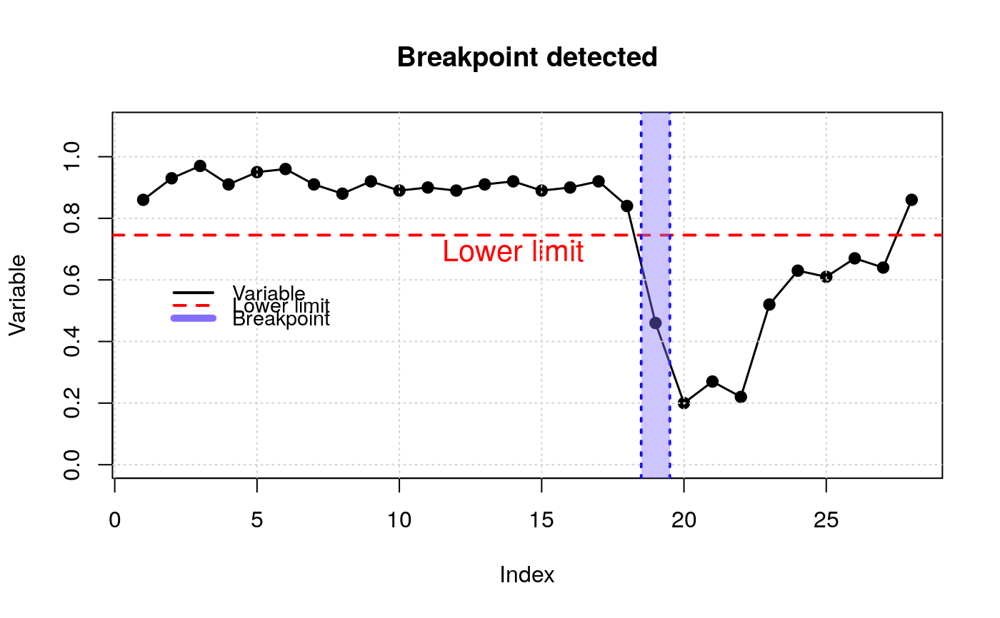

pvts.RdThis algorithm will allow to detect disturbances in the forests using all the available Landsat set. In fact, it can also be run with sensors such as MODIS.
pvts(x, startm, endm, threshold = 5, img, tr, time = FALSE)
| x | Vector, Matrix, RasterStack, RasterBrick |
|---|---|
| startm | The start of the monitoring time |
| endm | The end of the monitoring time (The year in which changes will be detected) |
| threshold | The default threshold is 5 for photosynthetic vegetation, while for indices such as NDVI and EVI the threshold is 3. Please see Tarazona et al. (2018) for more details. |
| img | The image of the monitoring start position, i.e. "start" position (in case "x" is a matrix) |
| tr | The vector of the analysis time range must contain the start time of the time series, the end time and the frequency of the series. For example: tr <- c(1990, 2017, 1) (i.e., the time series starts in 1990, ends in 2017 and has an annual frequency of 1). See ts for more details. |
| time | If it is TRUE the plotting will be with time coordinates. |
Tarazona, Y., Mantas, V.M., Pereira, A.J.S.C. (2018). Improving tropical deforestation detection through using photosynthetic vegetation time series – (PVts-b). Ecological Indicators, 94, 367 379.
In order to optimise the detections, it is advisable to make a smoothing through the smootH function before detecting changes. The smoothing will allow to eliminate outliers that were not eliminated during the masking of atmospheric artifacts.
library(ForesToolboxRS) library(raster) img_list <- system.file("PVts", package="ForesToolboxRS") %>% list.files("\\.tif$",full.names = TRUE) # Example 1. # photosynthetic vegetation time series between 1990 and 2017. # We will detect changes in 2008 (position 19) vec <- c(0.86, 0.93, 0.97, 0.91, 0.95, 0.96, 0.91, 0.88, 0.92, 0.89, 0.90, 0.89, 0.91, 0.92, 0.89, 0.90, 0.92, 0.84, 0.46, 0.20, 0.27, 0.22, 0.52, 0.63, 0.61, 0.67, 0.64, 0.86) cd <- pvts(x = vec, start = 18, end = 19, threshold = 5)# NOT RUN { #Example 2. #imgs <- as.matrix(stack(img_list)) # imgs is a matrix #dim(imgs)[1]= 1000 # is the number of pixels (time series) #dim(imgs)[2]=29 # is the number of images between 1990 and 2018 ## Change monitoring period 2015-2018. 2015(position 26),2018(position 29) #cd <- pvts(x=imgs, start=26, end=29, threshold=5,img=lastimg) #plot(cd) # }